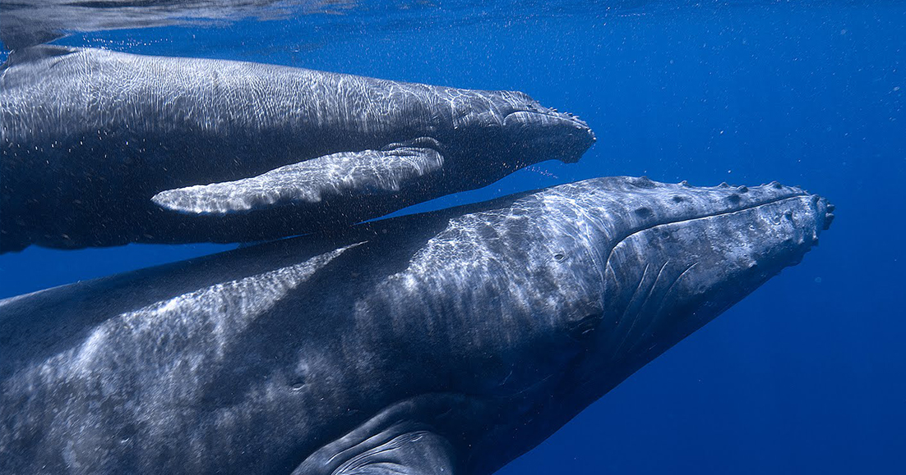

- Blue Whale
| Scientific name | Balaenoptera musculus |
|---|---|
| Habitat | Arctic, Tropical, Subtropical, and Temperate seas. |
| Diet | Tiny shrimp, Copepods, and Tiny Fish |
| Scientific name | Balaenoptera musculus |
|---|---|
| Habitat | Arctic, Tropical, Subtropical, and Temperate seas. |
| Diet | Tiny shrimp, Copepods, and Tiny Fish |